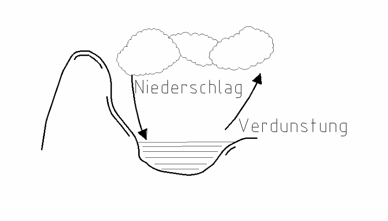
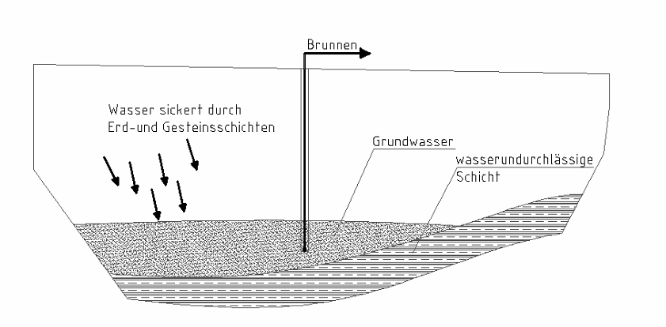

2 Wasserkreislauf
Der Motor des Wasserkreislaufs ist die Sonne.
- Die Sonne erwärmt das Wasser am Land, in Meeren, Flüssen und Seen.
- Das Wasser verdunstet. Das heißt: Es wird zu Wasserdampf und steigt auf.
- Es bilden sich Wolken.
- Das Wasser kommt als Niederschlag (Regen, Schnee) wieder zur Erde.

Das Wasser im Boden
Das Wasser sickert durch Erd- und Gesteinsschichten. Dabei wird es gefiltert (= gereinigt).
Es löst auch Stoffe aus dem Boden auf. Diese Stoffe heißen Inhaltsstoffe.
Unten kommt eine undurchlässige Schicht. Da kommt das Wasser nicht durch. Es staut sich und bildet das Grundwasser.
Eine Brunnenanlage (ein Brunnen mit Pumpe) pumpt das Grundwasser herauf.

Inhaltsstoffe im Wasser
| Inhaltsstoff | Was passiert? |
|---|---|
| Kalk, Eisen, Mangan | führen zu Ablagerungen in den Rohren |
| Nitrate | gesundheitsschädlich |
| Keime | machen krank; entstehen durch stehendes Wasser oder kaputte Brunnen |
Wasser ist wertvoll. Darum muss man sorgsam damit umgehen.
Sorgsam heißt: sparsam und vorsichtig.
Tippe die richtige Antwort an. Dann tippe auf „Prüfen“.
Grün = richtig, Rot = schau noch einmal.
Aufgabe 1
Lückentext: Tippe in jedem Satz das richtige Wort an.
Der Motor des Wasserkreislaufs ist die .
Durch die Wärme das Wasser.
Dadurch bilden sich .
Das Wasser kommt als wieder zur Erde.
Aufgabe 2
Lückentext: Tippe in jedem Satz das richtige Wort an.
Beim durch Erd- und Gesteinsschichten wird das Wasser (= gereinigt).
Auf dem Weg durch den Boden das Wasser Stoffe auf.
Diese Stoffe heißen .
Kommt das Wasser auf eine Schicht, so staut es sich auf.
Es bildet das .
Eine pumpt das Wasser zum Gebrauch herauf.
Ein Umgang mit Wasser ist wichtig.
Aufgabe 3
Welche Inhaltsstoffe führen zu Ablagerungen in den Rohren?
Aufgabe 4
Welche Inhaltsstoffe sind gesundheitsschädlich?